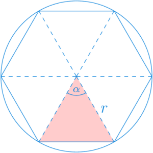
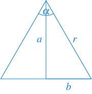
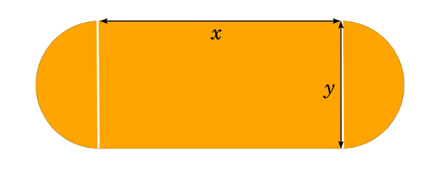

2 2022-12-14
Examen de Análisis I
2.1 Primera parte
Ejercicio 2.1 La población de parásitos que infecta un árbol, en miles, evoluciona diariamente siguiendo la sucesión recursiva \(x_1=2\) y \(x_{n+1}=1-(2+x_n)^{-1}\) \(\forall n\in\mathbb{N}\). Demostrar que la sucesión converge y calcular su límite.
El término recurrente de la sucesión puede escribirse de la siguiente manera
\[ x_{n+1}=1-(2+x_n)^{-1} = \frac{1+x_n}{2+x_n}\ \forall n\in\mathbb{N}. \]
Veamos primero que la sucesión está acotada inferiormente por \(0\) por inducción. \(x_1=2>0\), y suponiendo \(x_n>0\) se tiene que \(x_{n+1} = \frac{1+x_n}{2+x_n} >0\) \(\forall n\in\mathbb{N}\).
Veamos ahora que la sucesión es decreciente también por inducción. \(x_1 = 2 < x_2 = 1-(2+2)^{-1} = 3/4\). Supongamos ahora que \(x_{n-1}>x_n\), entonces
\[ \begin{gathered} x_{n-1}>x_n \Leftrightarrow 2+x_{n-1} > 2+x_n \Leftrightarrow (2+x_{n-1})^{-1} < (2+x_n)^{-1} \\ \Leftrightarrow 1-(2+x_{n-1})^{-1} > 1-(2+x_n)^{-1} \Leftrightarrow x_{n}>x_{n+1}\ \forall n\in\mathbb{N}. \end{gathered} \]
Así pues, como la sucesión es monótona decreciente y está acotada inferiormente, según el teorema de la convergencia monótona, la sucesión converge.
Para calcular el límite aprovechamos la recurrencia,
\[ x = \lim_{n\to\infty}x_n = \lim_{n\to\infty} \frac{1+x_{n-1}}{2+x_{n-1}} =\frac{1+\lim_{n\to\infty}x_{n-1}}{2+\lim_{n\to\infty}x_{n-1}} = \frac{1+x}{2+x}, \]
y resolviendo la ecuación se tiene
\[ x = \frac{1+x}{2+x} \Leftrightarrow x(2+x) = 1+x \Leftrightarrow x^2+x-1=0 \Leftrightarrow x = \frac{-1\pm \sqrt{5}}{2}. \]
Como hemos visto que la sucesión está acotada inferiormente por \(0\), podemos descartar la solución negativa, de manera que, \(\lim_{n\to\infty}x_n = \frac{-1+ \sqrt{5}}{2}\).
Ejercicio 2.2 En el siglo III A.C usó el método por agotamiento para calcular el área encerrada por una circunferencia. La idea consiste en inscribir la circunferencia en polígonos regulares con un número de lados cada vez mayor.
El área de estos polígonos puede calcularse fácilmente descomponiendo los polígonos regulares en triángulos como en el siguiente ejemplo.

Dar el término general de la sucesión \((a_n)_{n=3}^\infty\) que expresa el área del polígono en función del número de lados \(n\).
Calcular el límite de la sucesión.
- Consideremos cada uno de los triángulos en los que se puede descomponer un polígono regular de \(n\) lados.

Puesto que para un polígono de \(n\) lados se obtienen \(n\) triángulos iguales, se tiene que el ángulo \(\alpha=\frac{2\pi}{n}\) de manera que \(\frac{\alpha}{2} = \frac{\pi}{n}\).
Aplicando las razones trigonométricas de un triángulo rectángulo, se puede deducir que
\[\begin{align*} \cos(\alpha/2) &= \cos(\pi/n) = \frac{a}{r} \Rightarrow a = r\cos(\pi/n)\\ \operatorname{sen}(\alpha/2) &= \operatorname{sen}(\pi/n) = \frac{b}{r} \Rightarrow b = r\operatorname{sen}(\pi/n) \end{align*}\]
Por tanto, el área del triángulo es
\[ \frac{a2b}{2} = ab= r^2\cos(\pi/n)\operatorname{sen}(\pi/n), \]
y como hay \(n\) triángulos idénticos en el polígono regular de \(n\) lados, se tiene que el área del polígono es
\[ a_n = n r^2\cos(\pi/n)\operatorname{sen}(\pi/n) \]
Calculamos ahora el límite de la sucesión
\[\begin{align*} \lim_{n\to\infty} a_n &= \lim_{n\to\infty} n r^2\cos(\pi/n)\operatorname{sen}(\pi/n)\\ &= r^2 \lim_{n\to\infty}\cos(\pi/n)\lim_{n\to\infty}n\operatorname{sen}(\pi/n) \\ &= r^2 \cos(0)\lim_{n\to\infty}\pi\frac{n}{\pi}\operatorname{sen}(\pi/n) \\ &= \pi r^2 \lim_{n\to\infty}\frac{\operatorname{sen}(\pi/n)}{\pi/n} \\ &= \pi r^2 \lim_{\pi/n\to 0} \frac{\operatorname{sen}(\pi/n)}{\pi/n} = \pi r^2, \tag{$\operatorname{sen}(\pi/n)\approx \pi/n$} \end{align*}\]
que efectivamente es el área del círculo de radio \(r\).
Ejercicio 2.3 Sabiendo que \(\operatorname{sen}(x)\) y \(x\) son infinitésimos equivalentes en \(x=0\), demostrar que también lo son \(\operatorname{tg}(x)\) y \(x\).
Como \(\operatorname{sen}(x)\) y \(x\) son infinitésimos equivalentes en \(x=0\), se tiene que \(\lim_{x\to 0}\frac{\operatorname{sen}(x)}{x} = 1\).
Para demostrar que \(\operatorname{tg}(x)\) y \(x\) también son infinitésimos equivalentes en \(x=0\) calculamos el límite
\[\begin{align*} \lim_{x\to 0}\frac{\operatorname{tg}(x)}{x} &= \lim_{x\to 0}\frac{\frac{\operatorname{sen}(x)}{\cos(x)}}{x} = \lim_{x\to 0}\frac{1}{\cos(x)}\frac{\operatorname{sen}(x)}{x} \\ &= \lim_{x\to 0}\frac{1}{\cos(x)}\lim_{x\to 0}\frac{\operatorname{sen}(x)}{x} = \lim_{x\to 0}\frac{1}{\cos(x)} 1 = \frac{1}{\cos(0)} = 1. \end{align*}\]
Por tanto, \(\operatorname{tg}(x)\) y \(x\) son infinitésimos equivalentes en \(x=0\).
Ejercicio 2.4 Determinar el dominio y el tipo de asíntotas de la función
\[f(x)=\sqrt{\frac{x^3}{4x-1}}.\]
Para que exista la raíz, el radicando debe ser positivo, es decir, \(\frac{x^3}{4x-1}\geq 0\). Es fácil ver que \(x^3\geq 0\Leftrightarrow x\geq 0\) y \(4x-1\geq 0\Leftrightarrow x\geq 1/4\) de manera que \(\frac{x^3}{4x-1}\geq 0\Leftrightarrow x\leq 0 \mbox{ o } x\geq 1/4\).
Por otro lado, para que exista \(\frac{x^3}{4x-1}\) el denominador no puede anularse, es decir \(4x-1\neq 0 \Leftrightarrow x\neq 1/4\). Por tanto, concluimos que el dominio de la función es \(\operatorname{Dom}(f)=(-\infty, 0]\cup (\frac{1}{4},\infty)\).
Estudiamos ahora los tipos de asíntotas que tiene la función.
Asíntotas verticales
Los únicos puntos donde pueden existir asíntotas verticales son \(x=0\) y \(x=1/4\), así que calculamos los límites laterales en estos puntos.
\[ \lim_{x\to 0^-}f(x) = \lim_{x\to 0^-} \sqrt{\frac{x^3}{4x-1}} = \sqrt{\frac{0^3}{4\cdot 0-1}} = 0, \]
y por tanto, \(f\) no tiene asíntota vertical en \(x=0\).
\[ \lim_{x\to 1/4^+}f(x) = \lim_{x\to 1/4^+} \sqrt{\frac{x^3}{4x-1}} = \sqrt{\frac{(1/4)^3}{4(1/4)-1}} = \infty, \]
y por tanto, \(f\) tiene una asíntota vertical en \(x=1/4\).
Asíntotas horizontales
Para ver si hay asíntotas horizontales estudiamos los límites en \(\pm \infty\).
\[\begin{align*} \lim_{x\to-\infty}f(x) &= \lim_{x\to-\infty} \sqrt{\frac{x^3}{4x-1}} = \lim_{x\to-\infty} \sqrt{\frac{\frac{x^3}{x}}{\frac{4x-1}{x}}} = \lim_{x\to-\infty} \sqrt{\frac{x^2}{4-\frac{1}{x}}} = \infty.\\ \lim_{x\to\infty}f(x) &= \lim_{x\to\infty} \sqrt{\frac{x^3}{4x-1}} = \lim_{x\to\infty} \sqrt{\frac{\frac{x^3}{x}}{\frac{4x-1}{x}}} = \lim_{x\to\infty} \sqrt{\frac{x^2}{4-\frac{1}{x}}} = \infty. \end{align*}\]
Por tanto, \(f\) no tiene asíntotas horizontales.
Asíntotas oblicuas
Para ver si hay asíntotas oblicuas estudiamos los límites de \(f(x)/x\) en \(\pm\infty\)
\[\begin{align*} \lim_{x\to-\infty}\frac{f(x)}{x} &= \lim_{x\to-\infty} \frac{\sqrt{\frac{x^3}{4x-1}}}{x} = \lim_{x\to-\infty} \sqrt{\frac{x^3}{4x^3-x^2}} = \sqrt{\frac{1}{4}} = \frac{-1}{2}\\ \lim_{x\to\infty}\frac{f(x)}{x} &= \lim_{x\to\infty} \frac{\sqrt{\frac{x^3}{4x-1}}}{x} = \lim_{x\to\infty} \sqrt{\frac{x^3}{4x^3-x^2}} = \sqrt{\frac{1}{4}} = \frac{1}{2} \end{align*}\]
Por tanto, \(f\) tiene asíntotas oblicuas tanto en \(-\infty\) como en \(\infty\).
Ejercicio 2.5 Dado el conjunto \(A=\{x\in\mathbb{R} : \frac{x^2-1}{x-2}\leq 0\}\), calcular, si existe, el supremo, ínfimo, máximo y mínimo. ¿Es un conjunto cerrado o abierto?
\(A\) puede expresarse con la unión de intervalos, ya que \(x^2-1\geq 0 \Leftrightarrow x^2\geq 1 \Leftrightarrow x\leq -1 \mbox{ o } x\geq 1\), y por otro lado, \(x-2\geq 0 \Leftrightarrow x\geq 2\), de manera que \(\frac{x^2-1}{x-2}\leq 0 \Leftrightarrow x\leq -1\) o \(1\leq x<2\), es decir, \(A=(-\infty,-1]\cup [1,2)\).
Es fácil ver que \(A\) está acotado superiormente y la menor de las cotas superiores es \(2\), por lo que el supremo es \(2\), pero como \(2\not\in A\), \(A\) no tiene máximo.
En cuanto al ínfimo, \(A\) no está acotado inferiormente, de manera que no tiene ínfimo, y por tanto, tampoco mínimo.
\(A\) no es abierto, ya que \(-1\in A\), pero \(-1\) no es un punto interior de A, ya que para cualquier \(\varepsilon>0\) el intervalo \((-1-\varepsilon,-1+\varepsilon)\) contiene puntos de \(\overline{A}\).
Por otro lado, \(A\) tampoco es cerrado ya que \(\overline{A}=(-1,1)\cup [2,\infty)\) no es abierto, pues \(2\in\overline{A}\) pero no es un punto interior suyo, ya que para cualquier \(\varepsilon>0\) el intervalo \((2-\varepsilon,2+\varepsilon)\) contiene puntos de \(A\).
2.2 Segunda parte
Ejercicio 2.6 Dar una aproximación de \(\ln(\sqrt{1/2})\) usando un polinomio de Taylor de cuarto grado.
Para realizar la aproximación que se pide calcularemos el polinomio de Taylor de cuarto grado de la función \(f(x)=\ln(\sqrt{x})\) en el punto \(1\), ya que el valor de la función y sus sucesivas derivadas en este punto son sencillas. La fórmula del polinomio de Taylor es
\[ P_{f,1}^4(x) = f(1)+f'(1)(x-1)+\frac{f''(1)}{2!}(x-1)^2+\frac{f'''(1)}{3!}(x-1)^3+\frac{f''''(1)}{4!}(x-1)^4. \]
Así pues, calculamos hasta la cuarta derivada en \(1\):
\[\renewcommand{\arraystretch}{1.5} \begin{array}{lll} f(x)=\ln(\sqrt{x})=\frac{1}{2}\ln(x) & \quad & f(1) = \frac{1}{2}\ln(1) = 0\\ f'(x) = \frac{1}{2}x^{-1} & & f'(1) = \frac{1}{2}\\ f''(x) = \frac{-1}{2}x^{2} & & f''(1) = \frac{-1}{2}\\ f'''(x) = x^{-3} & & f'''(1) = 1\\ f''''(x) = -3x^{-4} & & f''''(1) = -3 \end{array} \]
Y sustituyendo en la fórmula del polinomio de Taylor se tiene
\[ \begin{aligned} P_{f,1}^4(x) &= 0+\frac{1}{2}(x-1)+\frac{-1/2}{2}(x-1)^2+\frac{1}{6}(x-1)^3+\frac{-3}{24}(x-1)^4\\ &= \frac{1}{2}(x-1)-\frac{1}{4}(x-1)^2+\frac{1}{6}(x-1)^3-\frac{1}{8}(x-1)^4. \end{aligned} \]
Para aproximar \(\ln(\sqrt{1/2})\) calculamos el polinomio en \(x=1/2\).
\[ P_{f,1}^4(1/2) = \frac{1}{2}\left(\frac{1}{2}-1\right)-\frac{1}{4}\left(\frac{1}{2}-1\right)^2+\frac{1}{6}\left(\frac{1}{2}-1\right)^3-\frac{1}{8}\left(\frac{1}{2}-1\right)^4 = -0.34114583. \]
Ejercicio 2.7 La función \(h(x)=\dfrac{x^2-2x+a}{x^3+bx^2-6x}\) tiene una discontinuidad evitable en \(x=2\). Calcular el valor de \(a\) y \(b\), y clasificar el resto de discontinuidades.
Para que la función \(h(x)=\dfrac{x^2-2x+a}{x^3+bx^2-6x}\) tenga una discontinuidad evitable en \(x=2\), debe cumplirse que \(\lim_{x\to 2}h(x)\neq h(2)\). Una manera de que esto se cumpla es que la función no esté definida en \(x=2\) pero sí exista el límite en ese punto. Para que la función no esté definida en \(x=2\) el denominador debe anularse, es decir,
\[ 2^3+b2^2-6\cdot 2=0\Rightarrow 8+4b-12 =0 \Rightarrow b=1. \]
Por otro lado, el límite en \(x=2\) es
\[ \lim_{x\to 2}\frac{x^2-2x+a}{x^3+x^2-6x} = \frac{a}{0}, \]
de manera que, para que el límite exista, debe ser \(a=0\), y en tal caso,
\[ \lim_{x\to 2}\frac{x^2-2x}{x^3+x^2-6x} = \lim_{x\to 2}\frac{x(x-2)}{x(x-2)(x+3)} = \lim_{x\to 2}\frac{1}{x+3} = \frac{1}{5}, \]
y, por tanto, \(h(x)\) tiene una discontinuidad evitable en \(x=2\) como se pide.
Como se trata de una función racional, será discontinua en los puntos que anulen el denominador, es decir \(x=-3\), \(x=0\) y \(x=2\). Ya hemos visto que en \(x=2\) hay una discontinuidad evitable y faltaría clasificar las otras dos discontinuidades.
En \(x=-3\) se tiene
\[ \begin{aligned} \lim_{x\to -3^-}\frac{x(x-2)}{x(x-2)(x+3)} &= \lim_{x\to -3^-}\frac{1}{x+3} = -\infty,\\ \lim_{x\to -3^+}\frac{x(x-2)}{x(x-2)(x+3)} &= \lim_{x\to -3^+}\frac{1}{x+3} = \infty, \end{aligned} \]
y, por tanto, \(h\) tiene una discontinuidad de salto infinito en \(x=-3\).
Finalmente en \(x=0\) se tiene
\[\lim_{x\to 0} \frac{x(x-2)}{x(x-2)(x+3)} = \lim_{x\to 0}\frac{1}{x+3} = \frac{1}{3},\]
por lo que \(h\) tiene otra discontinuidad evitable en \(x=0\).
Ejercicio 2.8 El envoltorio de unas píldoras está formado por un cilindro con dos semiesferas en sus extremos, tal y como se aprecia en la imagen.

Si el contenido de las píldoras debe ser de \(0.15\) ml, hallar las dimensiones de \(x\) e \(y\) para que el material empleado en el envoltorio sea mínimo.
El volumen de una esfera de radio \(r\) es \(v_e(r)=\frac{4}{3}\pi r^3\) y el de un cilindro de radio \(r\) y altura \(h\) es \(v_c(r,h)=\pi r^2 h\), de modo que que el volumen de la píldora es \(v(r,h)=v_e(r)+v_c(r,h) = \frac{4}{3}\pi r^3 + \pi r^2 h\). Como el volumen de la píldora debe ser \(0.15\) ml \(=0.15\) cm\(^3\), imponiendo esta restricción, se tiene
\[ v(r,h)=\frac{4}{3}\pi r^3 + \pi r^2 h = 0.15 \Leftrightarrow h = \frac{0.15-\frac{4}{3}\pi r^3}{\pi r^2}. \tag{2.1}\]
Por otro lado, la superficie de una esfera de radio \(r\) es \(s_e(r)=4\pi r^2\) y la superficie del envolvente de un cilindro de radio \(r\) y altura \(h\) es, en realidad, la superficie de un rectángulo de lados \(2\pi r\) y \(h\), es decir, \(s_c(r,h) = 2\pi r h\), de manera que la superficie de la píldora es \(s(r,h) = 4\pi r^2+2\pi r h\), pero sustituyendo el valor de \(h\) que hemos obtenido de imponer la restricción del volumen se tiene,
\[\begin{align*} s(r) &= 4\pi r^2 + 2\pi r \left(\frac{0.15-\frac{4}{3}\pi r^3}{\pi r^2}\right) = 4\pi r^2 + \left(\frac{0.3-\frac{8}{3}\pi r^3}{r}\right)\\ &= 4\pi r^2 + \frac{0.3}{r} - \frac{8}{3}\pi r^2 = \frac{4}{3}\pi r^2+ \frac{0.3}{r}, \end{align*}\]
que es la función a optimizar.
Para calcular el mínimo de la función, calculamos primero los puntos críticos.
\[ s'(r) = \frac{4}{3}\pi 2r -\frac{0.3}{r^2} =0 \Leftrightarrow \frac{8}{3}\pi r = \frac{0.3}{r^2} \Leftrightarrow r^3 = \frac{0.9}{8\pi} \Leftrightarrow r = \sqrt[3]{\frac{0.9}{8\pi}} \approx 0.3296 \mbox{cm}. \]
Para ver si en este punto hay un mínimo aplicamos el criterio de la segunda derivada.
\[ s''(r) = \frac{8}{3}\pi -\frac{0.3(-2)}{r^3} =\frac{8}{3}\pi+\frac{0.6}{r^3} >0\ \forall r>0. \]
Por tanto, \(s\) tiene un mínimo local en \(r=0.3296\), y la altura del la píldora con la mínima superficie será, utilizando la Ecuación 2.1,
\[h =\frac{0.15-\frac{4}{3}\pi 0.3296^3}{\pi 0.3296^2}\approx 0.\]
Así pues, las dimensiones óptimas serían \(x=h=0\) cm e \(y=2r=0.6592\) cm, que en realidad es una esfera de diámetro \(0.6592\) cm.
Ejercicio 2.9 Demostrar que la función \(f(x)=\ln\left(k\left(x^2-2x+\frac{3}{2}\right)\right)\) no puede tener más de una raíz en el intervalo \((0,1)\) para cualquier valor de \(k\).
\(x^2-2x+\frac{3}{2}>0\) \(\forall x\in\mathbb{R}\), de manera que, para que exista la función \(f\), debe ser también \(k>0\) y, por tanto, aplicando propiedades de logaritmos se tiene, \(f(x)=\ln\left(k\left(x^2-2x+\frac{3}{2}\right)\right)= \ln(k)+\ln\left(x^2-2x+\frac{3}{2}\right)\).
Por otro lado, como \(x^2-2x+\frac{3}{2}\) es un polinomio, es continuo en todo \(\mathbb{R}\), y por tanto, \(f(x)\) también es continua en todo \(\mathbb{R}\), siempre que \(k>0\).
Demostraremos que \(f\) no puede tener más de una raíz en el intervalo \((0,1)\) por reducción al absurdo. Supongamos que existen \(0 < a < b < 1\) tales que \(f(a)=f(b)=0\). Entonces, aplicando el teorema de Rolle, debe existir algún valor \(c\in(a,b)\) tal que \(f'(c)=0\). Si calculamos los puntos críticos de \(f\) se tiene
\[ f'(x) = \frac{2x-2}{x^2-2x+3/2} = 0 \Leftrightarrow 2x-2=0 \Leftrightarrow x=1, \]
pero como \(1\not \in (a,b)\), llegamos a una contradicción ya que no existe ningún valor \(c\in(a,b)\) con \(f'(c)=0\). Así pues, \(f\) no puede tener más de una raíz en el intervalo \((0,1)\).
Ejercicio 2.10 Calcular las ecuaciones de las rectas tangente y normal a la gráfica de la curva implícita \(e^{x^2y}-\ln(\sqrt{x-y})= 0\) en el punto \(x=0\).
En primer lugar obtenemos los valores de \(y\) que cumplen la ecuación de la curva implícita para \(x=0\). Sustituyendo en la ecuación se tiene
\[\begin{gathered} e^{0^2y}-\ln(\sqrt{0-y})= 0 \Leftrightarrow 1-\ln(\sqrt{-y}) = 0 \Leftrightarrow \\ \ln(\sqrt{-y}) = 1 \Leftrightarrow \sqrt{-y} = e \Leftrightarrow y=-e^2. \end{gathered}\]
Así pues, hay que calcular la ecuación de las rectas tangente y normal en el punto \((0,-e^2)\).
Como la pendiente de la recta tangente es la tasa de variación instantánea, calculamos \(y'=\frac{dy}{dx}\) implícitamente
\[\begin{gathered} \left(e^{x^2y}-\ln(\sqrt{x-y})\right)'= 0' \Leftrightarrow \left(e^{x^2y}-\frac{1}{2}\ln(x-y)\right)'= 0 \Leftrightarrow \\ e^{x^2y}(2xy+x^2y')-\frac{1}{2}\frac{1-y'}{x-y} = 0. \end{gathered}\]
Sustituyendo en \(x=0\) y \(y=-e^2\), se tiene
\[\begin{gathered} e^{0^2(-e^2)}(2\cdot0(-e^2)+0^2y')-\frac{1}{2}\frac{1-y'}{0-(-e^2)} = 0 \\ \Leftrightarrow \frac{-(1-y')}{2e^2} =0 \Leftrightarrow 1-y' = 0 \Leftrightarrow y'=1. \end{gathered}\]
Por tanto, la ecuación de la recta tangente a la curva en \((0,-e^2)\) es
\[y = y_0 + \frac{dy}{dx}(x_0,y_0) (x-x_0) = (-e^2)+1(x-0) = x-e^2.\]
Y la ecuación de la recta normal a la curva en \((0,-e^2)\) es
\[y = y_0 - \frac{1}{\frac{dy}{dx}(x_0,y_0)} (x-x_0) = (-e^2)-1(x-0) = -x-e^2.\]